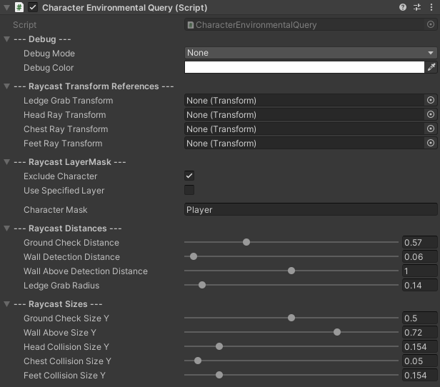

Overview
The CharacterEnvironmentalQuery class is intricately crafted to handle all environmental queries in your game. Seamlessly integrated with various transforms
representing key body parts like the head, chest, and feet, it offers precise control over the character's interaction with the game world. With features to customize
physics casts and layer interactions, this class enables you to meticulously manage environmental interactions. Whether checking for ground beneath the character,
detecting walls, or determining ledge grab opportunities, this class provides the tools to shape your game's environmental dynamics to your exact specifications.
Class Interactions
Any component within the asset that interacts with this class will utilize its configuration to operate effectively.
Those will be: HumanoidController, CharacterCombat, CharacterDash.
- The HumanoidController integrates this class to manage game mechanics and detect the character's grounded state.
- The CharacterCombat employs this class to impose restrictions on character attacks based on the attack configuration.
- The CharacterDash utilizes this class to ensure that, upon detecting walls in proximity to the character's head or feet, the dash mechanic smoothly avoids them, preventing any collisions.
Inspector
To ensure the proper functioning of each query, it's essential to provide a reference point for each one of them. These references are preferably represented by empty game objects,
which are attached as children to the character object, symbolizing the transform of each query. By adjusting the parameters of the component, you can fine-tune how
each query operates and functions within your game.
The default parameters of the component are configured to offer optimal functionality for characters with dimensions approximately around 0.72 on the X-axis and 1.64
on the Y-axis. These parameters are set to provide effective functionality without requiring extensive adjustments for characters of typical size in your game.

Debug
| DebugMode |
When in play mode, select which Physics Cast of the component you wish to debug. |
| DebugColor |
Specify the color of the drawn wire boxes. |
Raycast Transform References
| LedgeGrabTransform |
Game object that specifies the transform of the ledge check GameObject. |
| HeadRayTransform |
Game object that specifies the transform of the player's head. |
| ChestRayTransform |
Game object that specifies the transform of the player's chest. |
| FeetRayTransform |
Game object that specifies the transform of the player's feet. |
Raycast LayerMask
| ExcludeCharacter |
Check this box to exclude the layer assigned to the Character from all the Physics Casts. |
| CharacterMask |
Name of the player's assigned layer. (Tied with the ExcludeCharacter property) |
| UseSpecifiedLayer |
Check this box to assign specified layers for the Physics Casts to use. |
| SpecifiedLayer |
Specify which layers to be used in the Physics Casts. (Tied with the UseSpecifiedLayer property) |
Raycast Distances
| GroundCheckDistance |
How far should the cast check for a platform below the character. |
| WallDetectionDistance |
How far should the cast check for a platform in front of the character. |
| WallAboveDetectionDistance |
How far should the cast check for a platform above the character. |
| LedgeGrabRadius |
The radius used to detect ledges for potential grabbing. |
Raycast Sizes
| GroundCheckSizeY |
Adjust the size Y of the capsule cast. |
| WallAboveSizeY |
Adjust the size Y of the box cast. |
| HeadCollisionSizeY |
Adjust the size Y of the box cast. |
| ChestCollisionSizeY |
Adjust the size Y of the box cast. |
| FeetCollisionSizeY |
Adjust the size Y of the box cast. |